地域のタクシーと自治体がロボタクシーを考えるためのメディア
ロボタクシー実践ラボ
自動運転車・運行管理・配車アプリ・フリート管理（車両メンテナンス）・許認可・投資と収支。導入の判断に必要なことを、6つの分類で整理しています。
毎日ざっくりニュース
直近1週間のタクシー業界・ロボタクシーの動き。見出しを押すと詳しい記事が開きます。11月23日（月）
💬 米国のロボタクシーに逆風。安全と地域の合意の両方でブレーキがかかった。
11月20日（金）
💬 地方の自動運転バスが一歩前へ。運賃を取る実証と、地元の自動車学校の参加。
11月19日（木）
💬 国は運転席のない車の受け入れを進める。一方、国の補助の条件が厳しく、実証を見送る市も出た。
11月18日（水）
💬 ルールと車の両方が動いた日。日本は規制の見直しの議論へ、テスラは大人数向けの無人車を計画。
11月17日（火）
💬 Waymoは高速道路で足止め。一方、中国ではトヨタの車で完全無人の営業が始まった。


NEW
あなたが使える補助金
補助金を探す →
あなたが使える補助金
エリアと立場を選ぶと、国・都道府県・市町村の補助金をまとめて検索できます。ロボタクシーに向けて何を準備できるかも書いています。
米国の台数（主要3社）約4,500台以上1日 約7万回以上（公表はWaymoのみ）
中国の台数（主要3社）約3,800台以上百度を除く。1日 約1.1万〜3.5万回
日本の無人の有料営業0台試験走行の段階
2026年10月24日時点（Waymoの都市数は2026年10月28日時点）。出典と内訳は「数字で見るロボタクシーの現在地」を参照。

資料ページの抜粋
「ロボタクシーの現在地」の中から、代表的なスライドページのサンプルを紹介しています。


VIDEO
基礎知識の動画
タクシーサービスの現在地
「110年の規制、3つのねじれ、世界の4つの道」
国が台数と運賃を決めてきた日本のタクシーの歴史と、いまのねじれ、配車アプリが来た後の世界の4つの道から、タクシー会社が担う役割を読み解く動画です。
YouTube／ロボタクシー実践ラボ（11分28秒）
ロボタクシー、現状と世界への広がり
「12分でわかるアメリカ・中国・中東・日本」
サンフランシスコ・オースティン・武漢の台数と料金、社会に起きた変化、そして日本のタクシー会社と自治体がこの波にどう乗るかを解説する動画です。
YouTube／ロボタクシー実践ラボ（12分7秒）
NEW
新着記事
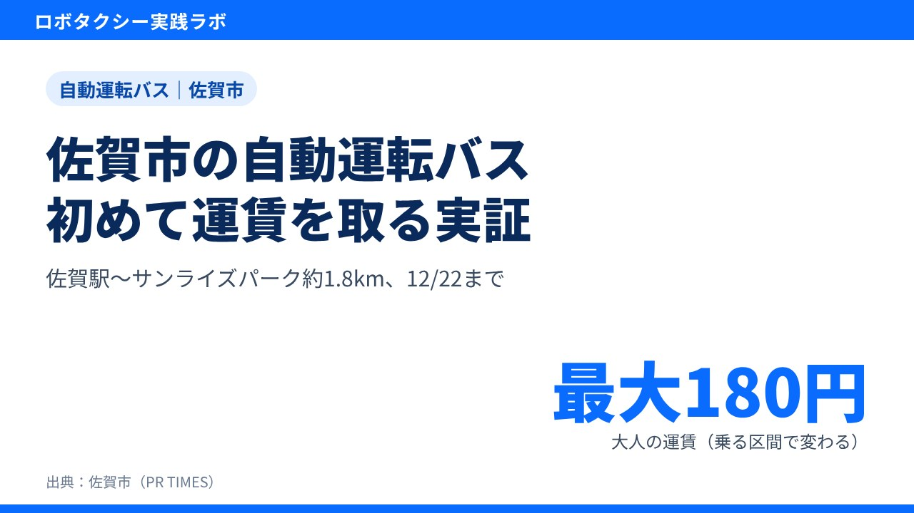
① 自動運転車佐賀市交通局、自動運転バスの実証で初めて運賃を取る（大人最大180円）。佐賀駅〜SAGAサンライズパーク約1.8kmを毎日6往復、12月22日まで2026.11.20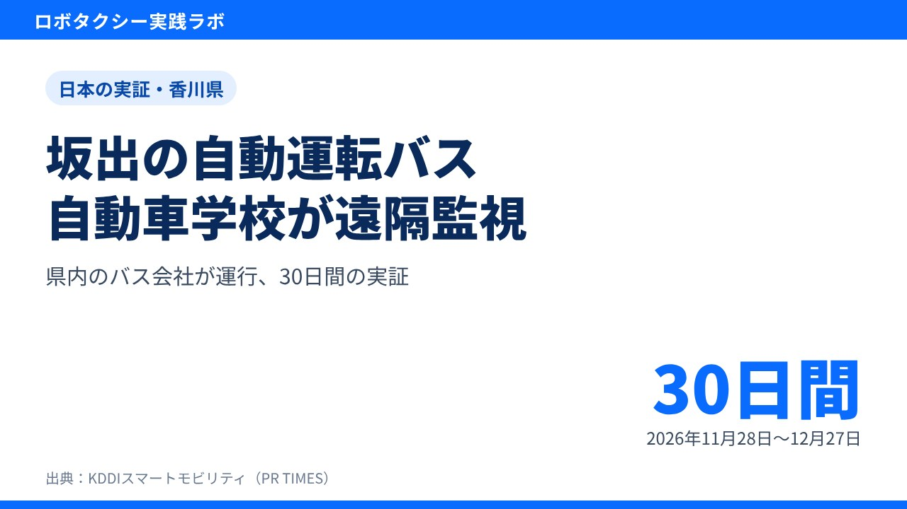
② 運行管理香川県坂出市で自動運転バスの実証が11月28日から30日間。琴参バスが運行し、坂出自動車学校が遠隔監視を担う。2028年のレベル4をめざす2026.11.20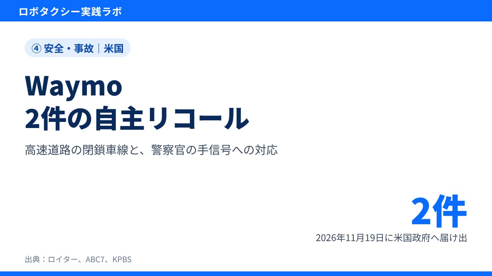
④ 安全・事故Waymo、高速道路の閉鎖車線と警察官の手信号への対応で2件の自主リコール。手信号は修正済み、閉鎖車線は修正中2026.11.20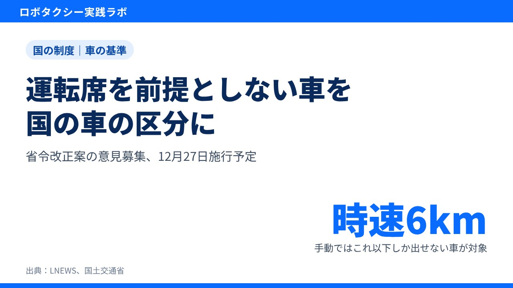
⑤ 許認可国交省、運転席を前提としない自動運転車を「自動運行用自動車」として区分する省令改正案の意見募集を開始。12月27日施行予定2026.11.19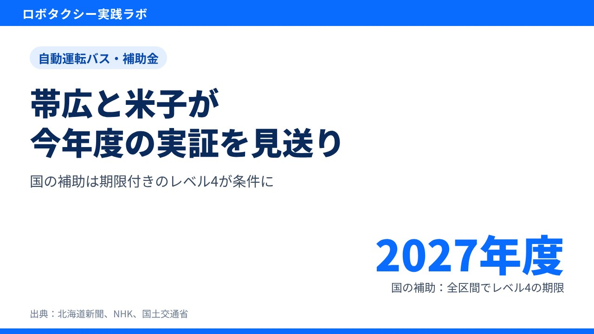
⑥ 投資と収支帯広市と米子市、今年度の自動運転バス実証を見送り。帯広は国の補助の条件と積雪が理由、米子は車両を見直す。国の補助は「2027年度までに全区間でレベル4」が条件に2026.11.19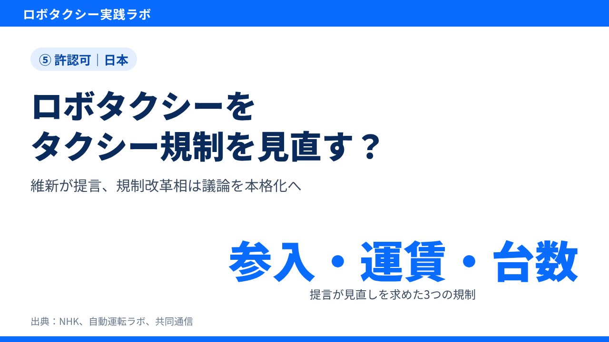
⑤ 許認可維新がロボタクシーの参入・運賃・台数の規制見直しを提言（政府の方針ではない）。規制改革相は自動運転の議論を本格化へと報道2026.11.18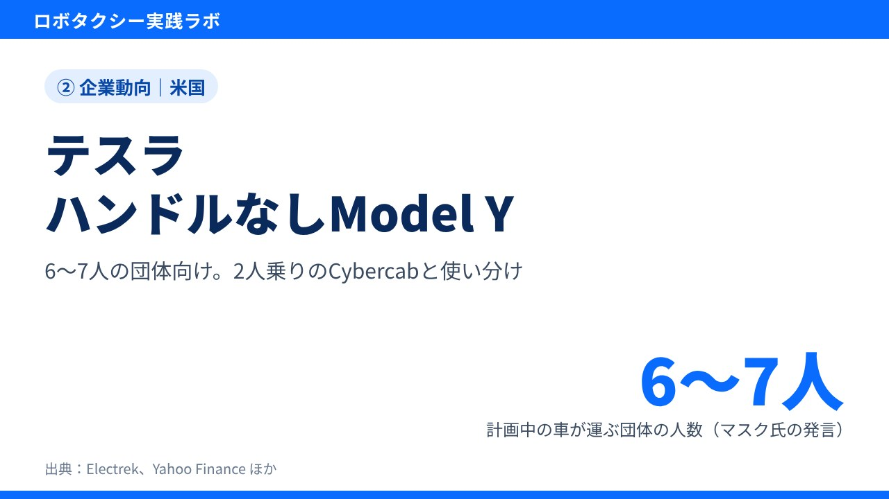
② 企業動向テスラ、6〜7人の団体向けにハンドルなしModel Yを計画。2人乗りのCybercabと使い分け2026.11.18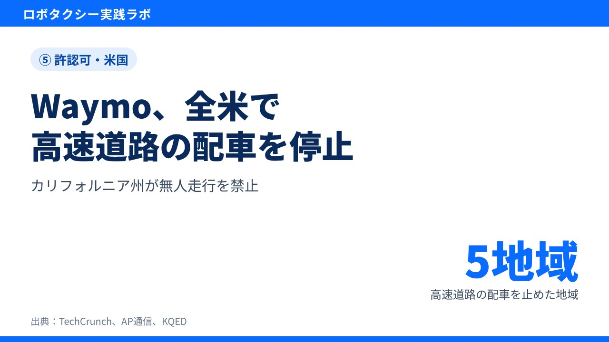
⑤ 許認可Waymo、全米で高速道路の配車を停止。カリフォルニア州が工事区間への進入とパトカーへの対応を理由に無人走行を禁止2026.11.17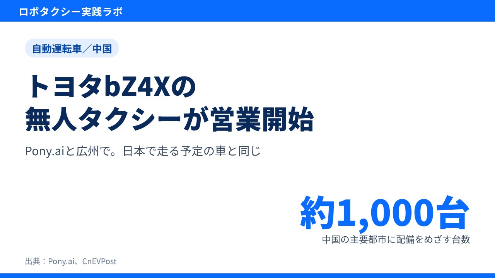
① 自動運転車Pony.aiとトヨタ、中国・広州でbZ4Xの完全無人ロボタクシーの営業を開始。トヨタとWaymoが2027年に日本で走らせる予定の車と同じ車種2026.11.16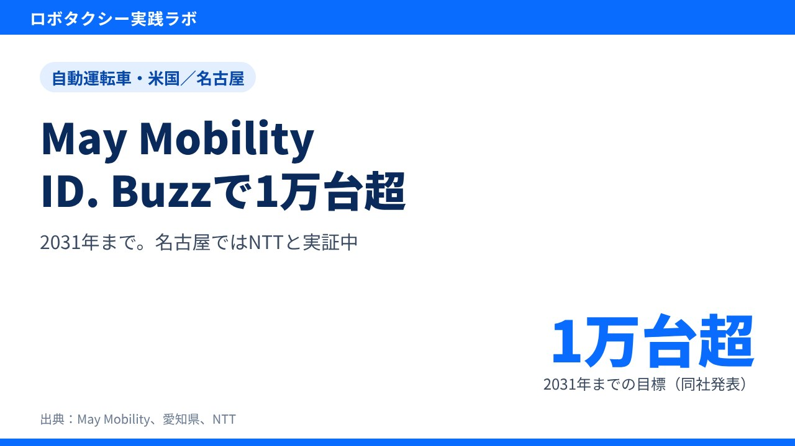
① 自動運転車May Mobility、VWのID. Buzzで2031年までに自動運転車1万台超を目指す。車は持たず運行会社と組む。名古屋ではNTTと名鉄タクシー系が実証中2026.11.12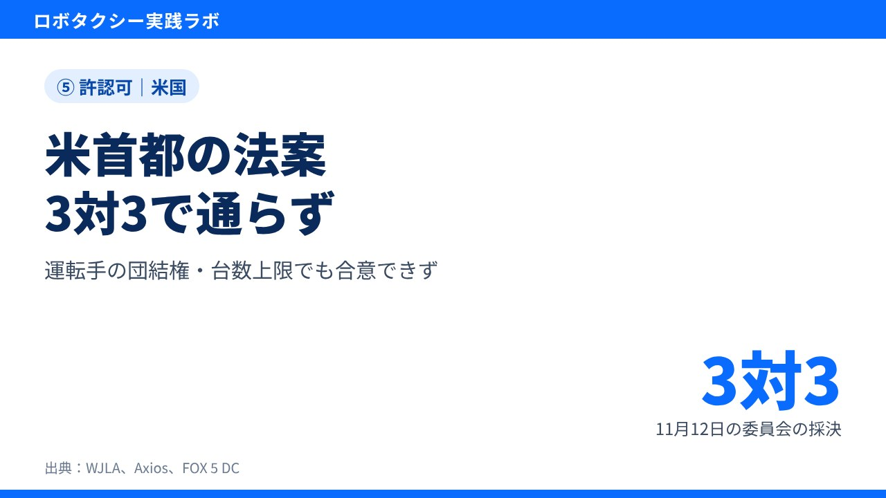
⑤ 許認可米首都ワシントンDCのロボタクシー法案、議会の委員会で3対3となり通らず。運転手の団結権や台数の上限を入れた修正案でも合意できず2026.11.12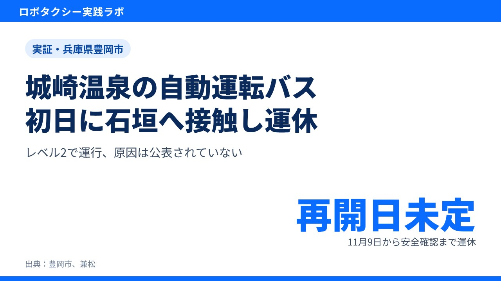
① 自動運転車城崎温泉の自動運転バス、一般客を乗せた初日に石垣へ接触し運休。オペレーターの手動操作はなかったと報道、原因は未公表2026.11.09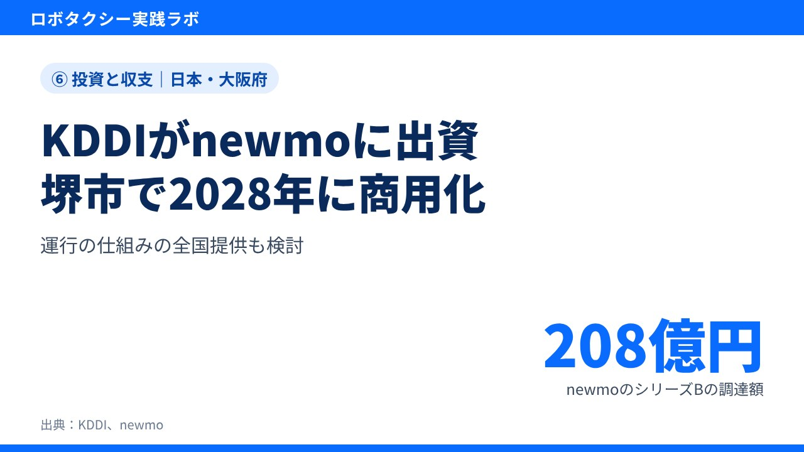
⑥ 投資と収支KDDIがnewmoに出資し、newmoは208億円を調達。堺市で2028年に自動運転タクシーの商用化を目指し、運行の仕組みを全国の事業者へ出すことも検討2026.11.06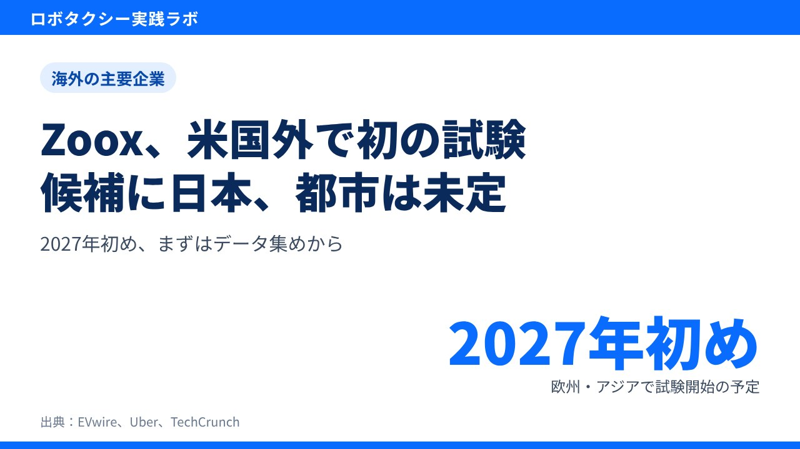
① 自動運転車Amazon傘下のZoox、2027年初めに米国外で初の試験へ。候補に日本、都市は未定。まずは運転者が乗ってデータ集め2026.11.06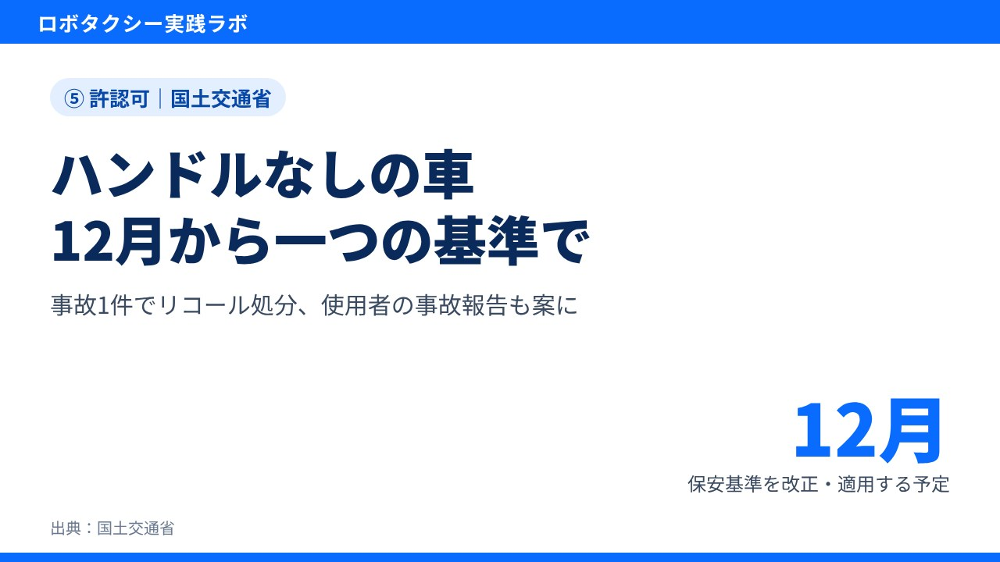
⑤ 許認可国交省、ハンドルやペダルのない自動運転車を12月から一つの基準で認める予定。事故1件でもリコール処分、タクシー会社などの使用者に事故報告を求める案も2026.11.04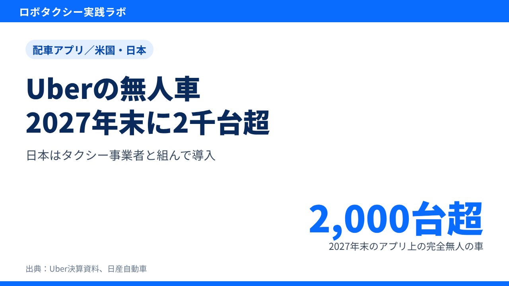
③ 配車アプリUber、アプリ上の無人車を2027年末に2,000台超へ。日本はタクシー事業者と提携して導入する計画。Waymoは2028年1月に2都市で独占をやめる2026.11.04 ② 運行管理テスラのロボタクシー、テキサス州フォートワースで乗車サービス開始。運行時間は朝6時〜深夜2時の1日20時間に2026.11.02
② 運行管理テスラのロボタクシー、テキサス州フォートワースで乗車サービス開始。運行時間は朝6時〜深夜2時の1日20時間に2026.11.02 ① 自動運転車トヨタとWaymo、ロボタクシー用のトヨタ「bZ4X」の初期運行を2027年に日本で始めると発表。台数・場所・一般客が乗れる時期は公表されず2026.10.30
① 自動運転車トヨタとWaymo、ロボタクシー用のトヨタ「bZ4X」の初期運行を2027年に日本で始めると発表。台数・場所・一般客が乗れる時期は公表されず2026.10.30 ④ フリート管理（車両メンテナンス）Waymo、米国の5都市で運行エリアを約250平方マイル（約650km²）広げると発表。宗像市の約5.4個分。都市ごとの面積と追加する台数は公表されていない2026.10.27
④ フリート管理（車両メンテナンス）Waymo、米国の5都市で運行エリアを約250平方マイル（約650km²）広げると発表。宗像市の約5.4個分。都市ごとの面積と追加する台数は公表されていない2026.10.27 ⑤ 許認可Waymoが米バージニア州北部の住宅街で道路の地図づくり。州には無人のタクシー営業を認める法律がなく、Waymoは「州全体の枠組み」を求める2026.10.27⑥ 投資と収支実践ラボの企画「1マイル1〜2ドル」を円に直すと？ NVIDIAが示したロボタクシー料金の見通しを、福岡県の地方のタクシー運賃と並べて試算2026.10.31③ 配車アプリ実践ラボの企画ロボタクシーはどのアプリで呼ぶのか：Uber・Lyft・inDrive・GOと「技術の会社」の組み方を比べる2026.10.31② 運行管理実践ラボの企画無人になっても残る「人の仕事」：遠隔からの助言・乗り降りの手助け・事故やトラブルの対応・車の世話2026.10.31
⑤ 許認可Waymoが米バージニア州北部の住宅街で道路の地図づくり。州には無人のタクシー営業を認める法律がなく、Waymoは「州全体の枠組み」を求める2026.10.27⑥ 投資と収支実践ラボの企画「1マイル1〜2ドル」を円に直すと？ NVIDIAが示したロボタクシー料金の見通しを、福岡県の地方のタクシー運賃と並べて試算2026.10.31③ 配車アプリ実践ラボの企画ロボタクシーはどのアプリで呼ぶのか：Uber・Lyft・inDrive・GOと「技術の会社」の組み方を比べる2026.10.31② 運行管理実践ラボの企画無人になっても残る「人の仕事」：遠隔からの助言・乗り降りの手助け・事故やトラブルの対応・車の世話2026.10.31 その他国内でロボタクシーに取り組む3社（ティアフォー・Turing・newmo）、情報発信の量と進め方を比べる2026.10.26
その他国内でロボタクシーに取り組む3社（ティアフォー・Turing・newmo）、情報発信の量と進め方を比べる2026.10.26 ② 運行管理GO・Waymo・日本交通、2027年中に東京で完全無人のタクシーを目指す。運転席が空いても「人の仕事」は残ると現役ドライバーの筆者が指摘2026.10.26
② 運行管理GO・Waymo・日本交通、2027年中に東京で完全無人のタクシーを目指す。運転席が空いても「人の仕事」は残ると現役ドライバーの筆者が指摘2026.10.26 ④ フリート管理（車両メンテナンス）テスラ、オースティンのCybercabが「300台超」と発表。州の登録は319台、実際に街で数えられた台数は105〜178台2026.10.25
④ フリート管理（車両メンテナンス）テスラ、オースティンのCybercabが「300台超」と発表。州の登録は319台、実際に街で数えられた台数は105〜178台2026.10.25 ⑤ 許認可中国、自動運転システムの安全の国家基準を2027年7月1日に施行へ。ロボタクシーにあたる「レベル4」も対象に2026.10.24
⑤ 許認可中国、自動運転システムの安全の国家基準を2027年7月1日に施行へ。ロボタクシーにあたる「レベル4」も対象に2026.10.24 その他（アライアンス）Pony.ai、配車アプリのinDrive・半導体のNVIDIAと覚書。カザフスタンの首都アスタナでロボタクシーの試験運用を検討へ2026.10.23
その他（アライアンス）Pony.ai、配車アプリのinDrive・半導体のNVIDIAと覚書。カザフスタンの首都アスタナでロボタクシーの試験運用を検討へ2026.10.23 ④ フリート管理（車両メンテナンス）Waymo、ロボタクシーを2027年末までに約2万台へ増やす計画と報道。東京では2027年の営業開始をめざす2026.10.22
④ フリート管理（車両メンテナンス）Waymo、ロボタクシーを2027年末までに約2万台へ増やす計画と報道。東京では2027年の営業開始をめざす2026.10.22 ① 自動運転車XPeng、ロボタクシー「YOYO」の招待制の登録を中国で開始。高精度の地図とLiDARを使わず、カメラ中心で走る2026.10.21
① 自動運転車XPeng、ロボタクシー「YOYO」の招待制の登録を中国で開始。高精度の地図とLiDARを使わず、カメラ中心で走る2026.10.21 ① 自動運転車NVIDIAの自動運転の土台「Hyperion」、欧州の自動車メーカー・配車会社で採用広がる。ロボタクシーでは配車大手Boltが2.5万台以上の計画、フアンCEOは「料金は1マイル1〜2ドル程度に」2026.10.21
① 自動運転車NVIDIAの自動運転の土台「Hyperion」、欧州の自動車メーカー・配車会社で採用広がる。ロボタクシーでは配車大手Boltが2.5万台以上の計画、フアンCEOは「料金は1マイル1〜2ドル程度に」2026.10.21 ① 自動運転車テスラ第3四半期決算：ロボタクシーの無人走行が累計約320万kmに。ハンドルのない専用車Cybercabの乗車サービスも始まった2026.10.21
① 自動運転車テスラ第3四半期決算：ロボタクシーの無人走行が累計約320万kmに。ハンドルのない専用車Cybercabの乗車サービスも始まった2026.10.21LATEST
カテゴリー別の記事
 業界の現在地数字で見るロボタクシーの現在地2026.10.24
業界ニュース第一交通産業とNTTモビリティが連携協定。九州から自動運転の導入へ2026.10.24
ロボタクシー図鑑Waymo（ウェイモ）：米国15都市で無人営業更新日 2026.10.24
許認可ナビ警察の「特定自動運行の許可」とはSTEP 4
業界の現在地数字で見るロボタクシーの現在地2026.10.24
業界ニュース第一交通産業とNTTモビリティが連携協定。九州から自動運転の導入へ2026.10.24
ロボタクシー図鑑Waymo（ウェイモ）：米国15都市で無人営業更新日 2026.10.24
許認可ナビ警察の「特定自動運行の許可」とはSTEP 4
NEWS
業界ニュース
- ④ 安全・事故Waymo、高速道路の閉鎖車線と警察官の手信号への対応で2件の自主リコール。手信号は修正済み、閉鎖車線は修正中
- ② 運行管理香川県坂出市で自動運転バスの実証が11月28日から30日間。琴参バスが運行し、坂出自動車学校が遠隔監視を担う。2028年のレベル4をめざす
- ① 自動運転車佐賀市交通局、自動運転バスの実証で初めて運賃を取る（大人最大180円）。佐賀駅〜SAGAサンライズパーク約1.8kmを毎日6往復、12月22日まで
- ⑥ 投資と収支帯広市と米子市、今年度の自動運転バス実証を見送り。帯広は国の補助の条件と積雪が理由、米子は車両を見直す。国の補助は「2027年度までに全区間でレベル4」が条件に
- ⑤ 許認可国交省、運転席を前提としない自動運転車を「自動運行用自動車」として区分する省令改正案の意見募集を開始。12月27日施行予定
- ② 企業動向テスラ、6〜7人の団体向けにハンドルなしModel Yを計画。2人乗りのCybercabと使い分け
- ⑤ 許認可維新がロボタクシーの参入・運賃・台数の規制見直しを提言（政府の方針ではない）。規制改革相は自動運転の議論を本格化へと報道
- ⑤ 許認可Waymo、全米で高速道路の配車を停止。カリフォルニア州が工事区間への進入とパトカーへの対応を理由に無人走行を禁止
- ① 自動運転車Pony.aiとトヨタ、中国・広州でbZ4Xの完全無人ロボタクシーの営業を開始。トヨタとWaymoが2027年に日本で走らせる予定の車と同じ車種
- ⑤ 許認可米首都ワシントンDCのロボタクシー法案、議会の委員会で3対3となり通らず。運転手の団結権や台数の上限を入れた修正案でも合意できず
- ① 自動運転車May Mobility、VWのID. Buzzで2031年までに自動運転車1万台超を目指す。車は持たず運行会社と組む。名古屋ではNTTと名鉄タクシー系が実証中
- ① 自動運転車城崎温泉の自動運転バス、一般客を乗せた初日に石垣へ接触し運休。オペレーターの手動操作はなかったと報道、原因は未公表
- ① 自動運転車Amazon傘下のZoox、2027年初めに米国外で初の試験へ。候補に日本、都市は未定。まずは運転者が乗ってデータ集め
- ⑥ 投資と収支KDDIがnewmoに出資し、newmoは208億円を調達。堺市で2028年に自動運転タクシーの商用化を目指し、運行の仕組みを全国の事業者へ出すことも検討
- ③ 配車アプリUber、アプリ上の無人車を2027年末に2,000台超へ。日本はタクシー事業者と提携して導入する計画。Waymoは2028年1月に2都市で独占をやめる
- ⑤ 許認可国交省、ハンドルやペダルのない自動運転車を12月から一つの基準で認める予定。事故1件でもリコール処分、タクシー会社などの使用者に事故報告を求める案も
- ② 運行管理テスラのロボタクシー、テキサス州フォートワースで乗車サービス開始。運行時間は朝6時〜深夜2時の1日20時間に
- ⑥ 投資と収支「1マイル1〜2ドル」を円に直すと？ NVIDIAが示したロボタクシー料金の見通しを、福岡県の地方のタクシー運賃と並べて試算
- ③ 配車システムロボタクシーはどのアプリで呼ぶのか：Uber・Lyft・inDrive・GOと「技術の会社」の組み方を比べる
- ② 運行管理無人になっても残る「人の仕事」：遠隔からの助言・乗り降りの手助け・事故やトラブルの対応・車の世話
- ① 自動運転車トヨタとWaymo、ロボタクシー用のトヨタ「bZ4X」の初期運行を2027年に日本で始めると発表。台数・場所・一般客が乗れる時期は公表されず
- ⑤ 許認可Waymoが米バージニア州北部の住宅街で道路の地図づくり。州には無人のタクシー営業を認める法律がなく、Waymoは「州全体の枠組み」を求める
- ④ フリート管理（車両メンテナンス）Waymo、米国の5都市で運行エリアを約250平方マイル（約650km²）広げると発表。宗像市の約5.4個分。都市ごとの面積と追加する台数は公表されていない
- その他国内でロボタクシーに取り組む3社（ティアフォー・Turing・newmo）、情報発信の量と進め方を比べる
- ② 運行管理GO・Waymo・日本交通、2027年中に東京で完全無人のタクシーを目指す。運転席が空いても「人の仕事」は残ると現役ドライバーの筆者が指摘
- ④ フリート管理テスラ、オースティンのCybercabが「300台超」と発表。州の登録は319台、実際に街で数えられた台数は105〜178台
- ⑤ 許認可中国、自動運転システムの安全の国家基準を2027年7月1日に施行へ。ロボタクシーにあたる「レベル4」も対象に
- その他（アライアンス）Pony.ai、配車アプリのinDrive・半導体のNVIDIAと覚書。カザフスタンの首都アスタナでロボタクシーの試験運用を検討へ
- ④ フリート管理Waymo、ロボタクシーを2027年末までに約2万台へ増やす計画と報道。東京では2027年の営業開始をめざす
- ① 自動運転車XPeng、ロボタクシー「YOYO」の招待制の登録を中国で開始。高精度の地図とLiDARを使わず、カメラ中心で走る
- ① 自動運転車NVIDIAの自動運転の土台「Hyperion」、欧州の自動車メーカー・配車会社で採用広がる。ロボタクシーでは配車大手Boltが2.5万台以上の計画、フアンCEOは「料金は1マイル1〜2ドル程度に」
- ① 自動運転車テスラ第3四半期決算：ロボタクシーの無人走行が累計約320万kmに。ハンドルのない専用車Cybercabの乗車サービスも始まった
- 提携第一交通産業とNTTモビリティが連携協定。九州から自動運転の導入へ
INTERVIEW
「運転手を雇えないなら、運転手のいらない車で地域の足を守るしかない」A社 代表取締役（架空の人物・仮の原稿）
キーマン・インタビュー
PERMIT NAVI
許認可ナビ 開業までの6ステップ
- 1事前相談地方運輸局
- 2車両の認可国土交通省
- 3自治体と折衝市町村
- 4警察の許可記事を読む →
- 5運輸局の認可地方運輸局
- 6車検・営業開始自動車技術総合機構
DATABASE
ロボタクシー図鑑
EVENT 2027年7月開催予定（仮）
第1回 地域ロボタクシー実践会議 in 福岡
会場：福岡市内 ／ 対象：タクシー事業者・自治体・関連企業 ／ 定員：100名